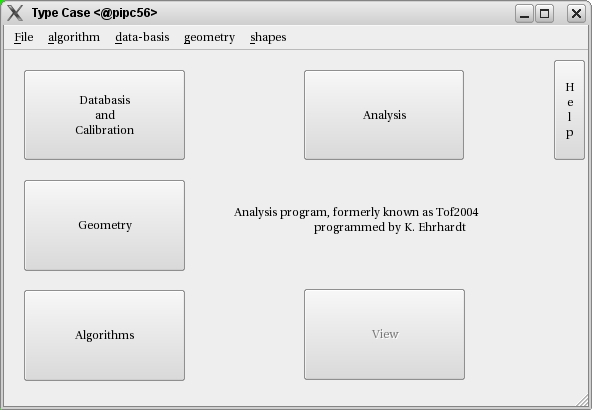

This work is licensed under a cc by-nc-sa 3.0 Unported License unless marked otherwise.
|
This is the main window of the typeCase Graphical User Interface. It gives you the possibility to access the display of the parameters used in the analysis by clicking on the respective buttons. It is also responsible for the file-IO of the different parameter-files, that can be displayed, modified and written again. At starting the parameter-files that where open, when the program last finished are reloaded. Here you also have the possibility to add algorithms, shapes, detectors, runs and beam-times, load single parameter files and add the parameter to the current lists. Also the installation wizards are accessable here - alternatively you can load a previously generated install-log to execute installation of new components. |  |
|
This work is licensed under a cc by-nc-sa 3.0 Unported License unless marked otherwise. |